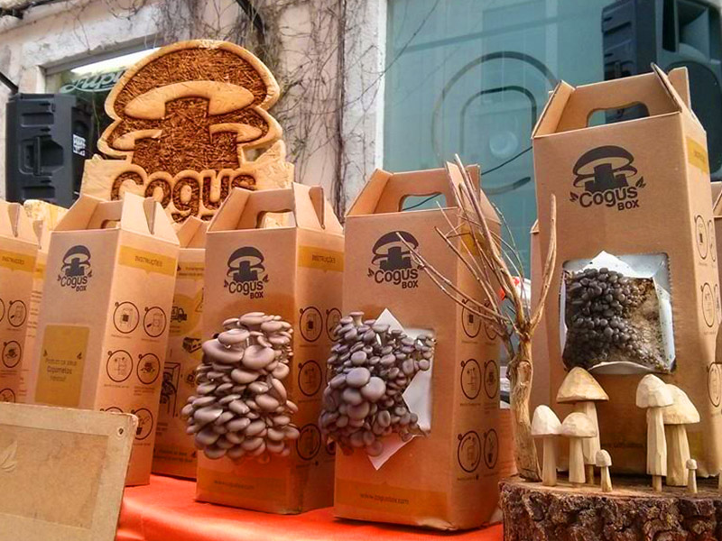
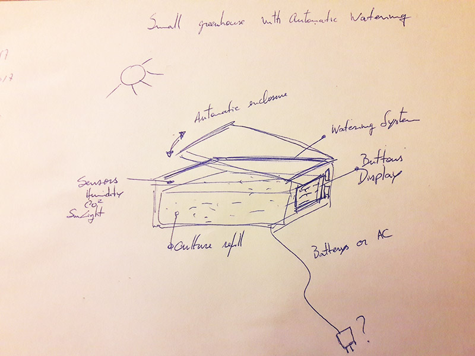

Final Project
As i've already said, i work at a FabLab, that supports startups in our local incubator.
I started to think on my final project through finding a way to help our local startups to develope their business model.
In the incubator, there is a project already ongoing, called CogusBox, that consists on a mushroom growing culture business based on material recycling, mainly coffee dust, sawdust and hazelnut shells.

After talking with its CEO, Fernando Castro, he shared with me that he was thinking on developing a micro watering system for his cogus Kits, a system that gives autonomy to the mushroom growth, considering the environment variables (humidity, sunlight, CO2, etc), something like this examples above but oriented to the mushroom production.

I've already started searching what's there on the market, and what projects have already been developed, so they can help me find my own way of doing it, to this specific king of funghiculture.
This kit will fit a pack of culture, and we can use it for optimizing the growth of our mushrooms at home. I draw this scheme for an initial skecth of an idea.

Let's try to help find Cogusbox a proper home!